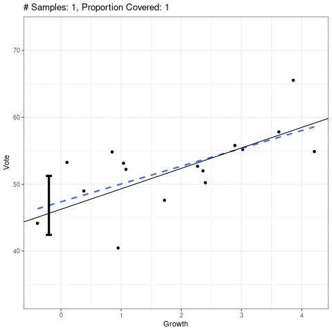
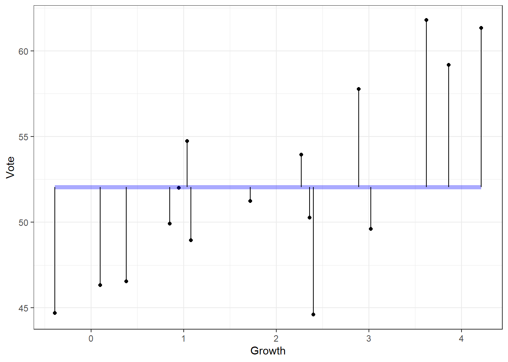
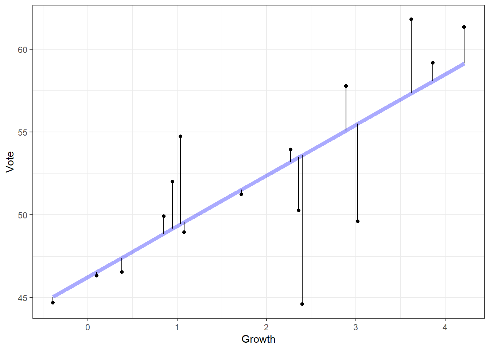

Simple Linear Regression: Inference
David Gerard
2021-07-29
Learning Objectives
- Chapter 2 of KNNL (skip section 2.11).
- Sampling distributions of OLS estimates.
- Hypothesis testing for regression coefficients.
- Confidence intervals for regression coefficients.
- Regression line intervals: pointwise confidence, prediction, confidence bands
- \(F\)-tests for regression models.
- \(R\) and \(R^2\).
Testing \(H_0:\beta_1=0\)
Recall our model for simple linear regression: \[\begin{align} Y_i &= \beta_0 + \beta_1 X_i + \epsilon_i\\ \epsilon_i &\overset{i.i.d.}{\sim} N(0, \sigma^2) \end{align}\]
A common task is to test the following hypotheses:
- \(H_0: \beta_1 = 0\).
- \(Y_i\) and \(X_i\) are not linearly associated.
- \(E[Y_i|X_i] = \beta_0\) no matter the value of \(X_i\). So \(X_i\) doesn’t tell us anything about \(Y_i\) (in the context of linear relationships).
- \(H_A: \beta_1 \neq 0\).
- \(Y_i\) and \(X_i\) are linearly associated.
- We can get better guesses by of \(Y_i\) by knowing \(X_i\) than if we did not know \(X_i\).
- \(H_0: \beta_1 = 0\).
Overview of the strategy of hypothesis testing:

- We obtain a test statistic whose large/small values will provide support against the null.
- We compare the observed test-statistic to the distribution of hypothetical test statistics we would have observed if the null were true.
- This distribution is called the sampling distribution of the test statistic.
- We obtain the \(p\)-value: The probability of seeing a data as extreme or more extreme than what we saw if the null were true.
- If the \(p\)-value is small, then our data would be very rare if the null were true, so we claim the null is not true.
- If the \(p\)-value is large, then our data would be common if the null were true. But it could also be common if the null were false, so we make no claims.
Sampling distribution
The sampling distribution of \(\hat{\beta}_1\) is \[ \hat{\beta}_1 \sim N\left(\beta_1, \frac{\sigma^2}{\sum_{i=1}^n (X_i - \bar{X})^2}\right). \]
We will prove the mean result of this.
Note that \(\hat{\beta}_1 = \sum_{i=1}^nk_iY_i\) where \(k_i = \frac{X_i - \bar{X}}{\sum_{i=1}^n(X_i - \bar{X})^2}\).
Property from theory: Any linear combination of independent normal random variables is also normal.
- So we just need the mean and variance of \(\hat{\beta}_1\) to know its distribution.
\[\begin{align} E[\hat{\beta}_1] &= E\left[\sum_{i=1}^nk_iY_i\right]\\ &=\sum_{i=1}^nk_iE[Y_i]\\ &=\sum_{i=1}^nk_i(\beta_0 + \beta_1 X_i)\\ &= \beta_0\sum_{i=1}^nk_i + \beta_1\sum_{i=1}^nk_iX_i. \end{align}\]
We will now prove that \(\sum_{i=1}^nk_i = 0\) and \(\sum_{i=1}^nk_iX_i = 1\).
\[\begin{align} \sum_{i=1}^nk_i &= \frac{\sum_{i=1}^n(X_i - \bar{X})}{\sum_{i=1}^n(X_i - \bar{X})^2}\\ &= \frac{\sum_{i=1}^nX_i - \sum_{i=1}^n\bar{X}}{\sum_{i=1}^n(X_i - \bar{X})^2}\\ &= \frac{n\bar{X} - n\bar{X}}{\sum_{i=1}^n(X_i - \bar{X})^2}\\ &= 0. \end{align}\]
\[\begin{align} \sum_{i=1}^nk_iX_i &= \frac{\sum_{i=1}^nX_i(X_i - \bar{X})}{\sum_{i=1}^n(X_i - \bar{X})^2}\\ &= \frac{\sum_{i=1}^nX_i^2 - \bar{X}\sum_{i=1}^nX_i}{\sum_{i=1}^n(X_i - \bar{X})^2}\\ &= \frac{\sum_{i=1}^nX_i^2 - n\bar{X}^2}{\sum_{i=1}^n(X_i - \bar{X})^2}\\ &= \frac{\sum_{i=1}^nX_i^2 - 2n\bar{X}^2 + n\bar{X}^2}{\sum_{i=1}^n(X_i - \bar{X})^2}\\ &= \frac{\sum_{i=1}^nX_i^2 - 2\bar{X}\sum_{i=1}^nX_i + n\bar{X}^2}{\sum_{i=1}^n(X_i - \bar{X})^2}\\ &= \frac{\sum_{i=1}^n(X_i^2 - 2\bar{X}X_i + \bar{X}^2)}{\sum_{i=1}^n(X_i - \bar{X})^2}\\ &= \frac{\sum_{i=1}^n(X_i - \bar{X})^2}{\sum_{i=1}^n(X_i - \bar{X})^2}\\ &= 1 \end{align}\]
Putting this together, we have \[ E[\hat{\beta}_1] = \beta_0\sum_{i=1}^nk_i + \beta_1\sum_{i=1}^nk_iX_i = \beta_0 \times 0 + \beta_1 \times 1 = \beta_1. \]
The proof for \(var(\hat{\beta}_1)\) is similar.
Finding a test statistic.
The standard deviation of the sampling distribution of an estimator is called the standard error.
The standard error \(\hat{\beta}_1\) is \(\frac{\sigma^2}{\sum_{i=1}^n (X_i - \bar{X})^2}\).
We don’t know \(\sigma^2\), but we have an estimator for it, the mean squared error (MSE).
\[ MSE = \frac{1}{n-2} \sum_{i=1}^n(Y_i - \hat{Y}_i)^2 \]
So the estimated standard error of \(\hat{\beta}_1\) is \(s(\hat{\beta}_1)\) where \[ s^2(\hat{\beta}_1) = \frac{MSE}{\sum_{i=1}^n (X_i - \bar{X})^2} \]
- We usually just say “standard error”, even when we are talking about the estimated standard error.
The distribution of \[ \frac{\hat{\beta}_1 - \beta_1}{s(\hat{\beta}_1)} \sim t_{n-2} \]
- A \(t\) distribution with \(n-2\) degrees of freedom.
- \(n\) is the sample size.
- We subtract two because we estimated two parameters \(\beta_0\) and \(\beta_1\) when we were calculating the MSE.
Confidence Interval for \(E[Y_i|X_i]\)

Prediction Interval for \(\hat{Y}_{i(new)}\) given \(X_{i(new)}\)

Confidence Bands

ANOVA approach to hypothesis testing
Our hypothesis test is a comparison between the two models: \[\begin{align} Y_i = \beta_0 + \epsilon_i\\ Y_i = \beta_0 + \beta_1 X_i + \epsilon_i \end{align}\]
We will call the first model the reduced model and the second model the full model. This is because the reduced model is a subset of the full model (you get the reduced from the full by setting \(\beta_1 = 0\)).
Sum of squares of reduced model
\[ SSE(R) = \sum_{i=1}^n(Y_i - \bar{Y})^2 \]

Sum of squares of full model
\[ SSE(F) = \sum_{i=1}^n(Y_i - \hat{Y}_i)^2 \]

Under the null that the reduced model is true, we have that the following statistic has a sampling distribution that is \(F(1, n-2)\) \[ F^* = \frac{[SSE(R) - SSE(F)]/(df_R - df_F)}{SSE(F)/df_F} \]